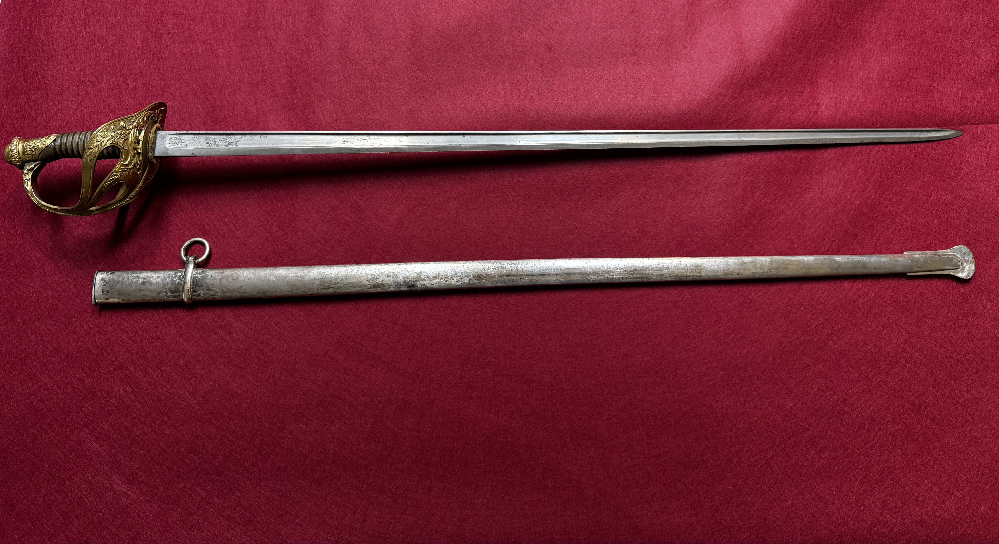
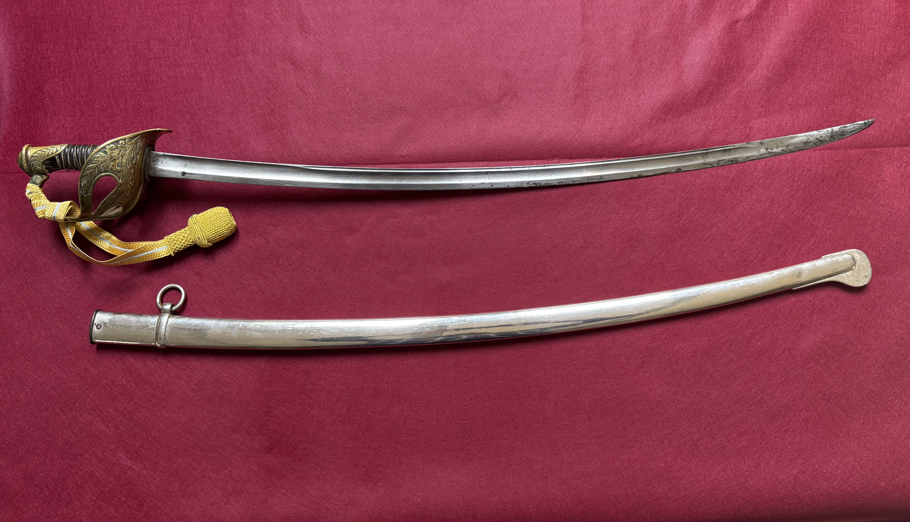
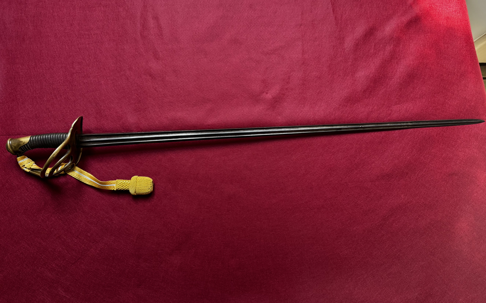
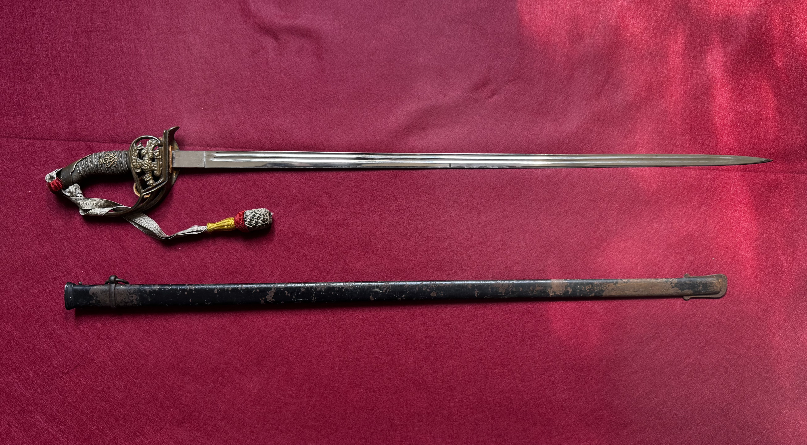
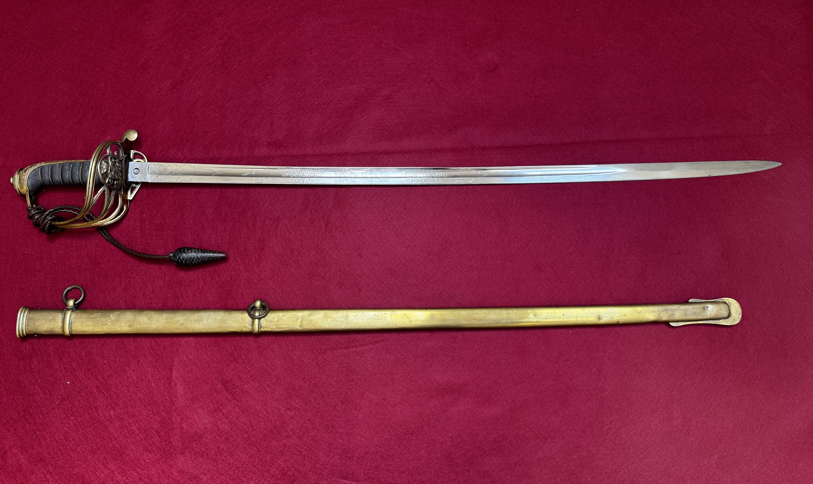
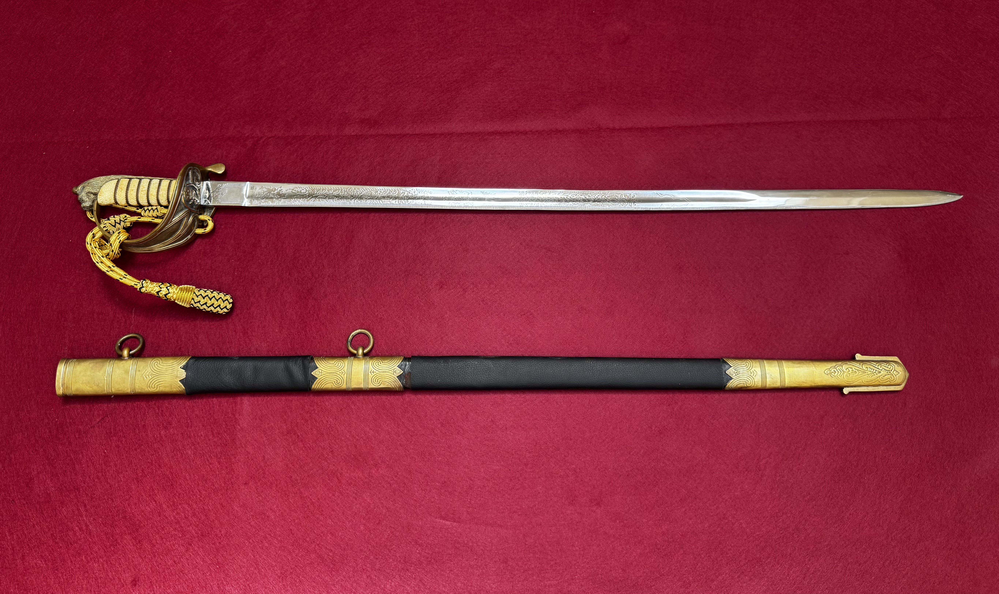
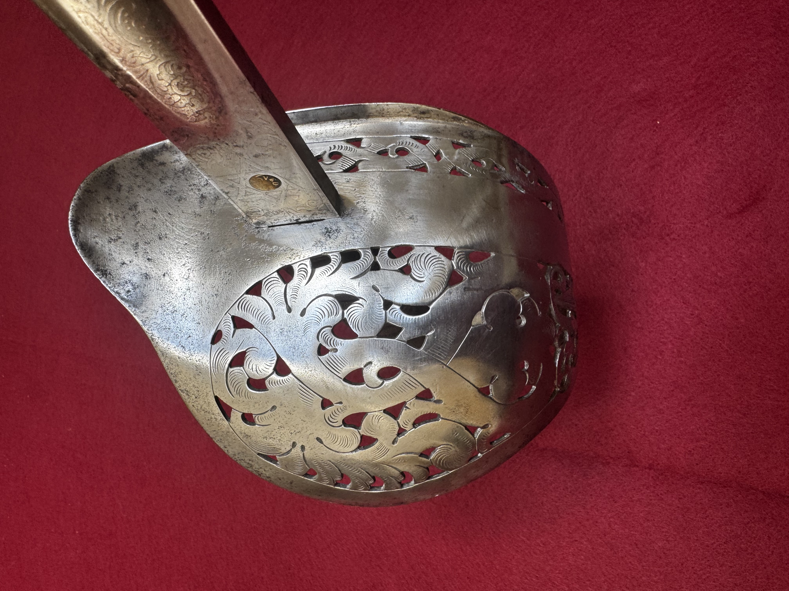
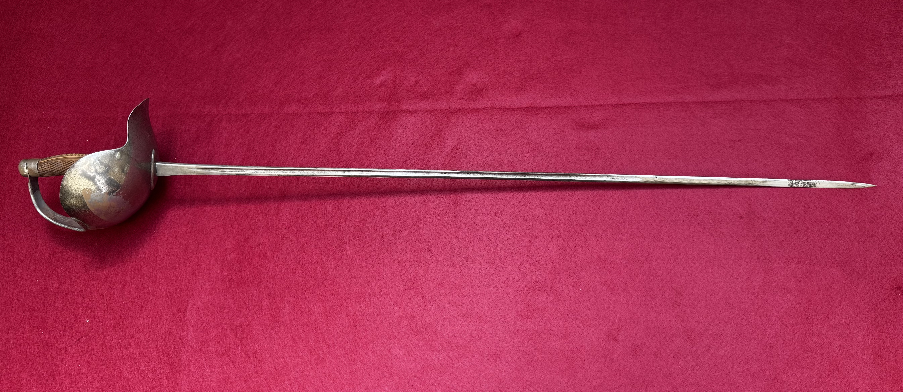
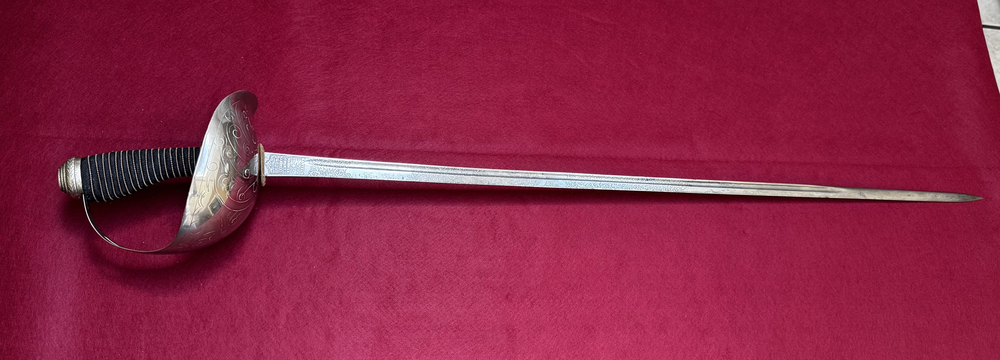

French Model 1896 Cavalry Saber
Late nineteenth-century French cavalry saber from the Historical Sword Society collection, documented through detailed photographs and artifact notes.
This section presents curated spotlights on individual swords, emphasizing identification, maker and inspector marks, measurements, metallurgy, condition, and historical context. Each sword spotlight will eventually link to its own dedicated page with full documentation.

Late nineteenth-century French cavalry saber from the Historical Sword Society collection, documented through detailed photographs and artifact notes.

Variant example combining a French Model 1896 hilt with an earlier Model 1822 blade, documented as part of the Historical Sword Society collection.

Early nineteenth-century heavy cavalry sword from the Napoleonic era, designed for powerful cutting in mounted combat.

Mid-19th century French infantry officer’s sword reflecting the transition from battlefield weapon to refined officer sidearm.

Imperial German infantry officer’s sword, or Infanterie Offizier Degen, representing rank, service, and martial identity in the late nineteenth and early twentieth centuries.

Ceremonial Spanish diplomatic sword reflecting civil authority, national identity, and formal state service traditions.

Victorian-era British infantry officer’s sword, representing the evolution toward a more functional and standardized blade design.

Victorian-era British naval officer’s sword reflecting mid-19th century pattern standardization.

Standard British infantry officer’s sword emphasizing thrust-centric blade design.

British training saber with a sharpened edge and fine point, reflecting advanced military swordsmanship practice.

British cavalry officer’s sword engineered for thrust-centric combat with a straight, spear-point blade.